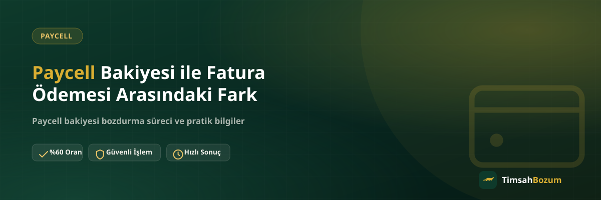

Paycell kullanan birçok kişi, cüzdanındaki bakiye ile telefon faturasına veya kontör bakiyesine yansıyan tutarı birbirine karıştırıyor. Oysa bu iki tutar farklı sistemlerde tutuluyor ve bozum açısından da farklı şekilde değerlendiriliyor. Bu yazıda Paycell bakiyesinin ne olduğunu, fatura/mobil ödeme ile arasındaki temel farkı ve hangisinin bozdurulabildiğini anlatıyoruz.
Paycell Bakiyesi Nedir?
Paycell, Turkcell'in sunduğu bir dijital cüzdan uygulamasıdır. Uygulama içindeki cüzdana para yükleyebilir, bu bakiyeyi alışveriş veya ödemelerde kullanabilirsin. Cüzdanda görünen tutar, hattının olup olmamasından bağımsız, doğrudan Paycell hesabına bağlı bir bakiyedir.
Fatura Ödemesi (Mobil Ödeme) Nedir?
Mobil ödeme ise farklı bir mekanizma. Bir uygulama içi satın alma veya dijital ürün alışverişi "mobil ödeme" yöntemiyle yapıldığında, tutar doğrudan cüzdana değil, hattının faturasına ya da ön ödemeli kontör bakiyesine yansır. Yani ödeme, Vodafone, Türk Telekom veya Turkcell gibi bir operatör üzerinden, hat bağlantılı olarak gerçekleşir.
Paycell ile Fatura Ödemesi Arasındaki Temel Fark Nedir?
En kısa tanımla: Paycell bakiyesi cüzdan tabanlıdır, fatura ödemesi ise hat tabanlıdır. Paycell'de bakiye doğrudan uygulama hesabında durur ve hat olmasa da kullanılabilir. Mobil ödemede ise tutar operatör faturana veya kontör bakiyene işlenir, bu yüzden hangi operatörle çalıştığın önem kazanır. Bu ayrım, bozum sürecinde hangi hizmete başvuracağını belirleyen en önemli noktadır.
Hangisi Bozdurulabilir?
Paycell bakiyesi bakiye tabanlı bir hizmet olduğu için bozdurulabilir ve kısmi bozum mümkündür; bakiyenin tamamını değil, istediğin bir kısmını bozdurup kalanını cüzdanında bırakabilirsin. Operatör üzerinden faturaya veya kontöre yansıyan mobil ödeme tutarları için de ayrı bir süreç işletiliyor; mobil ödeme bozdurma hizmeti bu tutarlar için geçerli. Hangi yöntemin senin durumuna uyduğunu netleştirmek için WhatsApp'tan güncel bilgini paylaşman en doğrusu.
Turkcell Kullanıcıları İçin Durum Nasıl?
Turkcell hattı olan kullanıcılarda mobil ödeme işlemi doğrudan Turkcell üzerinden ya da Paycell hesabı üzerinden gerçekleşebilir. Eğer işlem Paycell hesabına bağlıysa, bu tutar artık Paycell bakiyesi sayılır. Hesabın hangi sisteme bağlı olduğunu anlamanın en pratik yolu, Paycell uygulamasındaki cüzdan ekranını kontrol etmek; orada görünen tutar Paycell bakiyendir.
İkisini Birbirine Karıştırmak Neden Olur?
Her iki sistem de "bakiye" kelimesiyle anılıyor ve kullanıcı arayüzleri bazen benzer göründüğü için karışıklık kolay oluşuyor. Bir alışveriş veya oyun içi satın alma sırasında hangi yöntemin seçildiğine dikkat etmemek, sonradan "bu bakiye nereden geldi" sorusunu akla getiriyor. İşlem öncesi hangi yöntemi seçtiğini not etmek, ileride bozum için başvuracağın hizmeti doğru belirlemeni sağlar.
Bakiye ve Fatura Tutarı Aynı Ekranda mı Görünür?
Hayır, ikisi ayrı ekranlardan takip edilir. Paycell cüzdanındaki bakiye Paycell uygulaması içinden görülür. Operatör faturana veya kontör bakiyene yansıyan tutar ise ilgili operatörün kendi uygulamasında veya fatura sayfasında görünür. Bu iki ekranı tek bir toplam gibi düşünmek, hangi hizmete başvurman gerektiği konusunda kafa karışıklığına yol açabilir; bozum talep ederken hangi ekrandan baktığını belirtmen süreci kolaylaştırır.
Her İki Tutarı da Aynı Mesajda Bildirebilir miyim?
Evet. Hem Paycell cüzdanında bir bakiyen hem de operatör üzerinden faturana ya da kontörüne yansımış bir tutar varsa, bu iki durumu ayrı ayrı mesajlar yerine tek bir mesajda birlikte belirtmen süreci hızlandırır. Her birinin ekran görüntüsünü ayrı ayrı eklemek, hangi tutarın hangi sisteme ait olduğunu baştan netleştirir ve WhatsApp hattının seni ikinci bir mesajla bilgi istemesine gerek kalmaz.
Hangi Bilgi Hangi İşlem İçin Gerekir?
Paycell bakiyeni bozdurmak istiyorsan, uygulamadaki cüzdan ekranının güncel ve okunaklı bir ekran görüntüsünü hazırlaman yeterli. Mobil ödeme ile faturana veya kontörüne yansımış bir tutar için ise hangi operatörle çalıştığını ve ilgili ekran görüntüsünü paylaşman gerekiyor. İki durumda da üyelik, form doldurma veya hesabına erişim istenmiyor; tek ihtiyaç, güncel durumu gösteren bir görsel ve WhatsApp üzerinden iletişim.
Paycell Bakiyesi Bozdururken Nelere Dikkat Edilir?
Ekran görüntüsünün güncel tarihli olması, tutarın net okunması ve cüzdanına erişiminin olması bozum sürecini hızlandırıyor. Oranlar piyasa koşullarına göre değişebildiği için işlem öncesi güncel oranı WhatsApp'tan teyit etmek en doğru yaklaşım. Teyit adımı atlanırsa her iki taraf da birbirini beklemiş olur.
Operatör Değiştirirsem Paycell Bakiyem Ne Olur?
Paycell bakiyesi hesabın üzerinden, hat üzerinden değil cüzdan üzerinden tutulur. Bu yüzden operatör değiştirmen veya hat taşıman, Paycell cüzdanındaki bakiyeyi etkilemez; bakiye hesabında olduğu şekilde durmaya devam eder. Buna karşılık mobil ödeme yoluyla faturana veya kontörüne yansımış bir tutar, o hat ve operatörle ilişkilidir; hat taşındığında ilgili dönemin fatura veya kontör kurallarına bağlı kalır. Bu fark, hangi tutarın "sana ait ve taşınabilir" sayıldığını anlaman açısından önemlidir.
Bu Farkı Bilmek Neden Önemli?
Paycell bakiyesi ile faturaya yansıyan mobil ödeme tutarını ayırt etmek, bozum talebinde doğru hizmete yönelmeni sağlıyor. Yanlış hizmete başvurmak -örneğin faturana yansımış bir tutar için doğrudan Paycell bakiyesi bozdurma süreci başlatmak- işlemi geciktirir, çünkü paylaşılan bilgi talep edilen işlemle uyuşmaz. Hangi ekranda hangi tutarı gördüğünü baştan netleştirmek, WhatsApp'taki ilk mesajdan itibaren süreci doğru hizmete yönlendirir ve karşılıklı bilgi tekrarının önüne geçer.
İlgili Yazılar
- Paycell Bakiyesi Nasıl Oluşur, Nereden Gelir?
- Pokus ile Mobil Ödeme Arasındaki Fark Nedir?
- Paycell Bakiyesi Bozdurmanın Güvenli Yolu
Hangi sisteme ait bir bakiyen olduğundan emin değilsen, güncel ekran görüntünle WhatsApp hattımıza yazarak durumunu netleştirebilirsin.